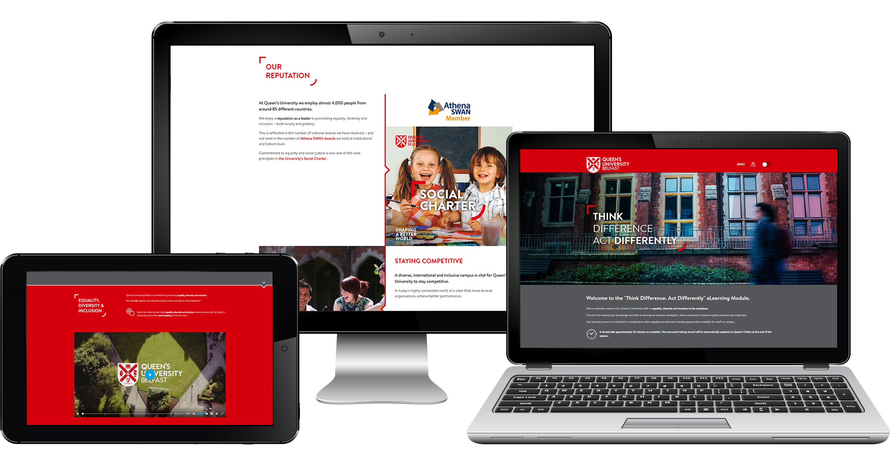
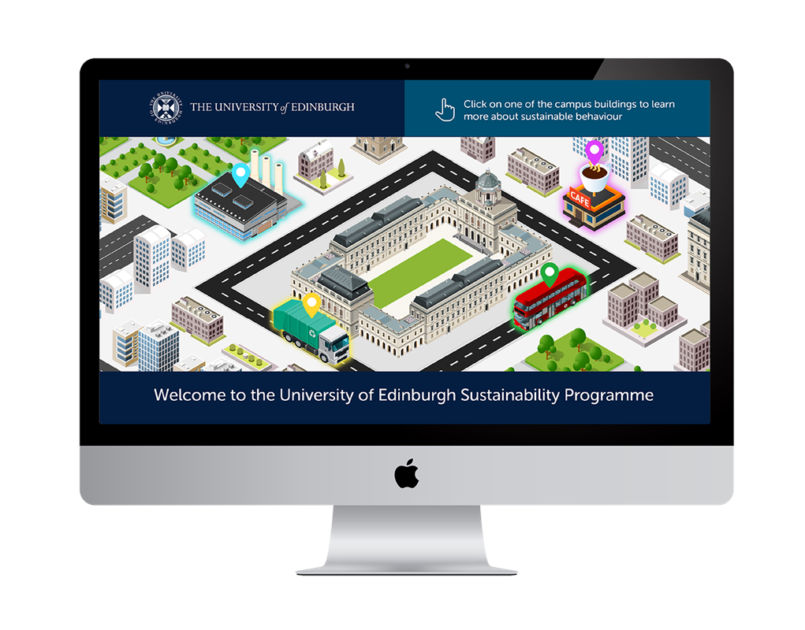

AURION LEARNING
PLACEMENT REPORT

Queens University Website (fig.2)
Acknowledgements
I would like to thank my Course Lecturers, Christopher Murphy, Paul McCormack and Dr Kyle Boyd for the guidance and support they have offered throughout my time at Ulster University and my time on placement.
I would also like to extend my gratitude to Maureen and Ciaran Murphy for giving me the opportunity to work at Aurion Learning. While on placement I received excellent guidance and support from Colette Boyd, Christopher McAuley and Angela Keenan and I would like to extend my thanks for their help.
Introduction
Having previously graduated from university I was well aware of the importance of gaining work experience. I applied for a number of placement opportunities; each offered me a different perspective on my future career. I felt the most beneficial placement would be with a company called Aurion Learning, which specialised in e-learning, multi-media solutions and digital design. The Belfast based company was created by Managing Director, Dr. Maureen Murphy, in 2000 and has come to employ roughly 30 people from many different vocations across Northern Ireland, Ireland and Scotland.
Although primarily an e-learning company, Aurion Learning offers a range of services and digital solutions including -
- Custom HTML5 e-learning experiences
- Authoring tools: Articulate Suite, Adobe Captivate, Evolve
- E-Learning templates
- Capacity building
- Off-the-shelf learning programs
- Interactive video
- Custom assessments and simulations
- Training and consultancy
To accommodate all of these services Aurion has employed a wide array of people from different vocations. The company consists of -
- 10 Designers
- 4 Instructional Designers
- 4 Project Managers
- 3 Directors
- 5 Marketing Specialists
- 3 Developers
- 2 Quality Assurance Specialists
The client base has also grown to include 90+ clients, all of which have used one of our many services as described earlier.
Role in the Company
My role in the company was a “Digital Designer.” A catch all term that is defined as the following -
Digital designers use creativity and computer skills to design visuals associated with electronic technology.1
My responsibilities within the company were as broad as the definition itself. Within one week I would find myself doing a range of different tasks on many different projects. However if I were to narrow it down I primarily designed e-learning programs, visual material for companies and websites. I will now go into greater depth regarding each one of my roles.
CBI E-learning Template (fig.1)
Building E-learning Courses
I spent most of my time on placement building e-learning courses. I enjoyed this aspect of my job as it involved a wide array of tasks such as designing and gathering visuals, editing audio/video content and then building these into interactive experiences within the course in order to keep the content as engaging as possible.
The design section of the course is essential as the final product must fit the clients brand guidelines, needs of the client and most importantly aid the learning process. While creating a product that is both aesthetically pleasing and fun to use is important, the primary focus of the program is teach and so all of these “bells and whistles” are simply there to aid learning, improve information absorption and minimise boredom. It also allowed me to experiment with User Interfaces and User experience focused designed.
Building Websites
At the start of my placement I was tasked with building and updating learning hubs for large companies. These sites were more utilitarian in nature and often involved using new methodologies or programs such as Umbraco or LearnUpon. The advantage to using these content management systems was that they were quicker to build and easier to maintain. I had difficulty using Umbraco as it differed entirely to my method for building a site however after prolonged use I slowly got used to it. On a weekly basis I would receive “Support Tickets” which were basically clients logging any changes or issues they had with the site. This work allowed me to keep my coding skills up-to-date, often implementing the newest tags released within HTML5.
Later in my placement we won contracts with Queens University (fig.2) and other companies that were more visual and design focused. These projects were much more engaging and I thoroughly enjoyed being challenged by them. I would often ask for advice on better methods or approaches from Developers or more Senior Designers. I also branched out to implementing Bootstrap and SCSS into some of my work but most projects involved the standard HTML/CSS/Javascript with back end implemented where necessary. I also recommended moving into Wordpress and other simple software in order to offer a lower tier pricing option for clients.
Edinburgh Tender (fig.3)

Visual Design Work
As a company we are constantly competing with others for contracts and tenders. These contracts range from web design, e-learning courses or on the rare occasion branding. In these occasions we set up a meeting with the company, examine their brand guidelines and get a good understanding of their needs and wants. I would spend some time working with a few ideas and creating a finalized mock-up of the product. The mock up is simply a number of screens within the project created in Illustrator/Photoshop. I recommended using prototyping tools to give the client a much better understanding of how the final product will look and behave. Other visual design work ranged from website banners, advertising materials, character creation for projects or physical materials used at conferences.
Miscellaneous
I would often cover the responsibilities of other designers when necessary. I was trained up to use a myriad of video and audio software such as Adobe Audition or Adobe Premiere until a dedicated in-house specialist could be employed. Similarly I also was tasked with creating animations using GoAnimate (for simplistic examples) and Adobe Animate (for advanced examples) and also creating product simulations using Adobe Captivate for a number of projects. I enjoyed learning new software as not only could it bolster my CV but it allowed me to experiment and try new out things.
Beyond multimedia work I would have other nebulous roles such as project pricing (how long it will take to complete a project) that would require forward planning and good time management skills, investigative and troubleshooting assignments and later in my placement attending meetings with clients to discuss the viability of projects. Despite these roles being my least favourite I believe they will play an important role in my professional development in the future.
Placement Competencies
I feel I was quite competent throughout my placement. I was able to take on work that was not normally assigned to placement students rather quickly, however I would say this had as much to do with me being a mature student as it did with any real exceptional level of skills. I did find however that the further along my placement went the more responsibilities I was given and more was expected of me. However this was a blessing in disguise as I was also given more important and frankly more entertaining projects, much of the “grunt” work was designated more evenly across the design time as time went on.
Learning and Skills
My responsibilities at Aurion predominantly consisted of activities and expertise that I was unfamiliar with. Due to this I had to learn many new programs, processes and abilities. These were taught in many different ways, the first couple of days consisted of online courses (Lynda.com) covering the basics of Articulate Storyline. I learned how to use Adobe Captivate the following week through one-to-one tuition and I shadowed some employees to observe them and pick up skills such as how to use SVN or Filezilla. However most times I was given a brief overview and just had to learn on my own (independent learning). I felt most comfortable with this approach as if I ran into any issues I would simply ask for guidance or help where necessary, there were reviews at stages to see how I got on and some constructive criticism as well.
Response to Feedback
I think as designers we can be resistant to criticism and take it quite personal at times, however I felt the Aurion staff were good at offering constructive criticism. The whole idea of a placement is to learn and improve your skills. Thus I came at the work with an open minded approach; I feel I was open and accepting to criticism. If I felt there were changes to my work that I didn’t agree with I would explain the reasons for my approach and apply the necessary changes anyway. To the best of my knowledge I never refused any criticism or changes to my work while at Aurion.
Challenges
I would have to say the biggest challenge during my placement was designing something within a tight time frame. At times I felt the Project Managers wouldn’t allow enough time for a project and so the product would suffer as a result. When you first join a company you want to leave your mark, you want to improve aspects of the company or even simply offer new designs or ideas. These designs or ideas take time to ferment and develop, but in a business orientated atmosphere this is sometimes viewed as wasted time and wasted money. I do however understand that they are trying to get the build done within a certain time and it is their job to do so; but some of the timescales I felt were unreasonable.
Other challenges I encountered was the constant mastering of new software. I feel it is important to acclimatise to this constant motion as it is indicative of my career path as an Interaction Designer. New technologies and methods are always on the horizon and so adaptability is an essential skill to learn.
Achievements
I would say my biggest achievement was winning a project for the company. I had to design an e-learning course to train nurses for the National Patient Safety Office (fig.4). It had to follow the brand guidelines of the company, be visually appealing, informative and easy to use. I decided to go a more usability friendly route as the users (Health Service Nurses) might not be computer literate and any ambiguity in the learning experience could prove detrimental to the product. We submitted the mock-up and it later went on to win the contract for the program. Despite this I have mixed feelings about the final product as I feel it isn’t an exceptionally brilliant piece. Personally I am more pleased with other projects such as my tender for University of Edinburgh (fig.3) or the program I built for the Central Bank of Ireland (fig.1). I get a bigger sense of achievement from these projects as I feel they are better projects overall.
Disappointments
I feel my biggest disappointment with my placement was the lack of freedom when it came to designing a website or e-learning course. Often our clients have a strict vision of how they want their product to look. They often must fit into a series of other e-learning courses and so there must be some form of continuity. Similarly they provide brand guidelines with a smorgasbord of colours and styles, thus creating something aesthetically pleasing can be challenging.
I also feel I could have done more web design work. While I worked on a major web design project every month or so, I was never involved from inception to completion. I would have loved to have designed something from beginning to end. In the last few weeks I had been integrated into the new UI/UX team and have been focusing solely on web design and other related projects. I have much hope and confidence that this new direction will offer much more job satisfaction.
Personal and Professional Development
I feel the placement has exposed me to new technical skills and competencies that I would have otherwise avoided or missed. Such examples of software include:
- E-learning authoring software – Articulate Storyline
- Product Simulation software – Adobe Captivate
- Sound editing software - Adobe Audition
- Video editing software - Adobe Premier
- Animation software – Go Animate
- Content management software - Umbraco
- Version control software such as GIT/SVN
Likewise my current skills and knowledge have been refined and improved through daily usage and repetition. A great example of this is the expansion of my coding skills and could potentially continue to include new languages required for gamification and more advanced web experiences.
I feel working in Aurion has greatly improved my self-confidence, team working skills and professional practice. I have developed much more adaptability and flexibility through learning new skills, methodologies and programs to meet demand when necessary.
The placement improved my knowledge of the digital industry, the Northern Irish job market and my place within it. As a result of this I can now make better future career choices. Furthermore exposure to the practices of a successful, professional company will aid me in my future goal of having my own web design company. While this goal of creating my own business has always been there, I feel the prolonged exposure of a year placement has solidified this concept and allowed me to think about the long term goals of my career.
Conclusion
The placement proved incredibly beneficial for me, not only have I gained a year’s work experience but I am also now currently employed as a Digital Designer at Aurion. Likewise having this extra year of professional experience will improve my employability for other companies in the future as I can contextualize my abilities with real world examples. All in all I feel my work placement has been one of the most beneficial choices I have made in my life and is an excellent foundation for my future and career.
References
- STUDY.COM. 2011. Salary and Career Info for a Digital Designer. [ONLINE] Available at: https://study.com/articles/Salary_and_Career_Info_for_a_Digital_Designer.html. [Accessed 5 August 2018].